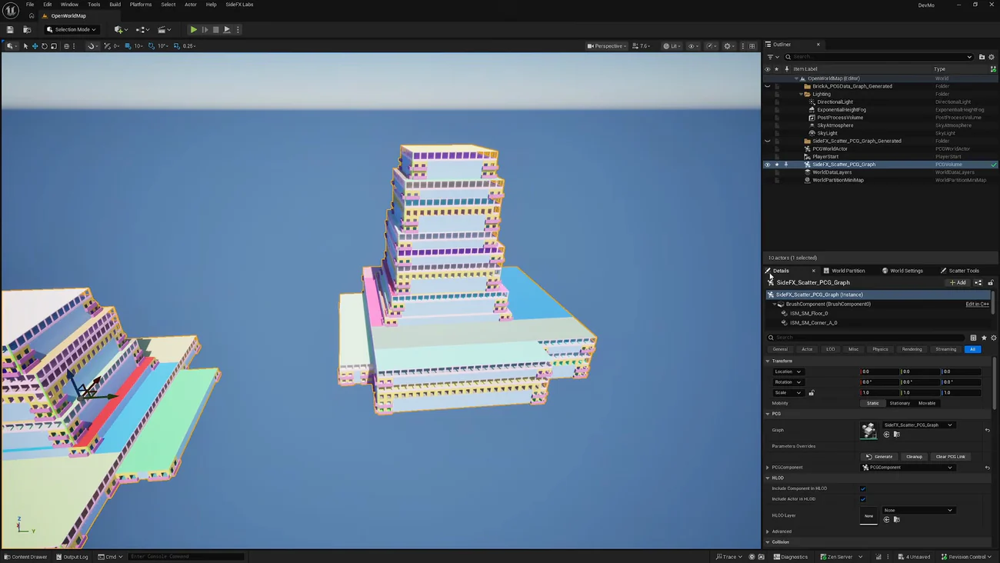
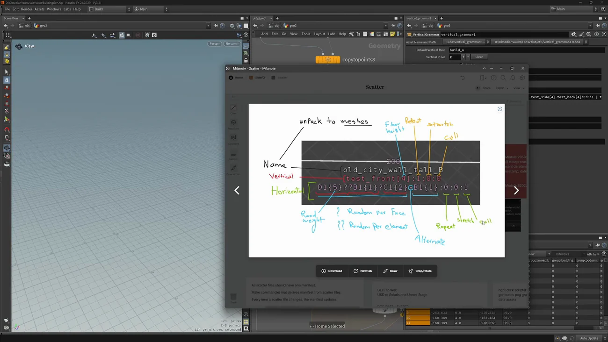

手続き的な都市 1 — アセット・パイプライン・最適化
出典: Procedural Cities for Games 1 | Assets, Pipeline and Optimization （SideFX 公式チュートリアル Build Procedural Cities for Games の第1回 / 講師 Mohamad Salame さん（SideFX）/ Houdini 21 / 難易度 Advanced / 39:37 / 英語）。 このページは、上記の動画を見ながら自分用にまとめた日本語の学習メモです。SideFX 公式の翻訳ではありません。
この回で扱うこと
- 大規模ワールドを作るときに立ちはだかる3つの問題という枠組み
- 建物が生成される5段の流れ
- Houdini の HDA を Python States でビューポートから直接編集するという作り方
- 開発中の Unreal 側 Scatter ツール。取り込む前に問題を検出できます
- ネスティングで、書き出すデータ量を増やさずに街の規模を稼ぐこと
- この2本でいちばん持ち帰る価値がある建物の文法（grammar）の記法
ツールそのものはまだ開発中のものが多いのですが、 設計の考え方は自分の環境でも使える話が多い回だと思います。
1. まず問題を3つに整理する
動画の出発点がこの整理で、これ自体が有用でした。
| 問題 | 中身 |
|---|---|
| パイプライン | Blender や Maya で作ったアセットをどうエンジンに入れるか。FBX・OBJ・USD・PCG と手段は多いのですが、 チームで反復できる形はどれかが問題になります |
| アセット | 大量のアーティストを雇う / AI で生成する（法的な問題があります）/ 手続き的に作る — Houdini でルールを書いて生成する |
| 最適化 | マテリアルとテクスチャの使い方、ドローコールを抑えるためのバンドル、 データのストリーミング、60fps 以上の維持 |
3つ目が効いてきます。「見た目を作る」話ではなく「動かせる形で出す」話として 全体が組まれているので、後半の出力ルートの比較まで一本の筋が通っています。
2. 建物ができる5段の流れ
| 段 | やること |
|---|---|
| 1. Block out | 大まかな塊を作ります |
| 2. Divide floors | 塊を階ごとにスライスします |
| 3. Create patterns | 各階に文法でパターンを作ります |
| 4. Extract points | パターンから点を取り出します |
| 5. Swap modules | 点に最終モジュールを差し替えます |
最後に出てくるのは点とメッシュ名です。これがそのまま Unreal の ISM になります。 「建物のジオメトリを作る」のではなく「どこに何を置くかを決める」のがこのツールの仕事だと分かります。
3. モジュールライブラリを組む
アセットはどこで作ってもよいとはっきり言っています（Blender でも Maya でも）。
Houdini に持ち込んで、Unreal 側のメッシュ名で命名します（SM_floor のように）。
そこからバルコニーやドアといった別々のパーツを整列させて組み合わせ、モジュールを作っていきます。
Python States でビューポートから編集する
この HDA は Python States を使っていて、ビューポートで直接編集できます。
| 操作 | できること |
|---|---|
| パーツをダブルクリック | 対応するマルチパームのエントリを直接編集できます |
| ダブルクリック → reset transform | 位置を戻せます |
これが実務的に大きいです。モジュールが増えるとパラメータの一覧は長くなり、 「いま画面で見ているこのパーツはリストのどれか」を探すのが手間になります。 画面で触ったものがそのままパラメータに繋がるなら、その探す時間がなくなります。
4. Unreal に入れる — Scatter ツール
Houdini 側で Export し、Import で自己テストしてから Unreal に渡します。 Unreal 側は開発中の Labs プラグインの Scatter ツールを使います。

いちばん良いと思ったのが Preview the scatter です。 取り込む前に問題を検出できます（緑なら OK）。 Flow セクションに何がいくつ spawn されるかが出るので、 「入れてみたら何も出なかった」を避けられます。
| 機能 | 内容 |
|---|---|
| spawn の形式 | PCG グラフ / ISM / HISM から選べます（Nanite assembly もあります） |
| スプレッドシート | spawn するメッシュ一覧を確認できます。ドラッグ＆ドロップで差し替えられますが、 manual override として問題フラグが立ちます。戻すには削除します |
| プレフィックス／サフィックス | 追加・除去ができます。Houdini 側に SM_ が付いていてエンジン側に無い、
といった食い違いをここで吸収できます |
| マッピング | Data Asset の名前で、または full recursive folder でフォルダ内を再帰検索 |
| Data Layers | インポート時に割り当てられます。ランタイムにブループリントでロード／アンロードしやすくなります |
| カーブ | スプラインやカーブ（ベジエ・NURBS）も取り込めます |
プレフィックスの吸収は地味ですが効きます。 命名規則の食い違いは実際によく起きるので、 どちらかを直すのではなくインポート時に変換できるほうが現実的です。
5. ネスティング — 書き出さずに規模を稼ぐ
街全体を何度もコピーしたいけれど、全インスタンスをエンジンに書き出したくない。 これに対する答えが入れ子です。
- 1つ目のエクスポータを
my_scatterという名前にします - 2つ目のエクスポータ（
city_scatter）が、そのファイルを点の上に spawn するように名前で参照させます - Unreal 側では
city_scatterを spawn します
Preview の Flow に「city_scatter が my_scatter を9回 spawn する」と出ます。
これを 100 placements まで増やしても高速に取り込めます。
データ量の実測
| 100点の配置情報 | 7 KB |
| インスタンス1ブロック | 1.7 MB |
| 都市全体（ワールドパーティション・データレイヤーと併用） | 20〜50 MB の想定 |
配置情報が 7 KB で済むというのがネスティングの意味です。 実体は1ブロックぶんだけ持って、あとは「そこに置く」という情報だけを増やしていきます。
6. 建物の文法（grammar）
ここがこの2本でいちばん持ち帰る価値がある部分だと思います。 ツールが完成していなくても、設計の考え方は他でも使えます。
なぜ独自の記法にしたのか
従来のシェイプグラマー（Matrix Awakens デモなどで使われるもの）は
* や ^ といった記号を使い切ってしまい、それ以上拡張できなくなります。
そこでコロンと数字を並べる形にしました。コロンを1つ足せば新しい意味を追加できるので、 上限が来ません。設計判断としてすっきりしていて、なるほどと思いました。

記法
| 種類 | 例 |
|---|---|
| Vertical | test_front [4] :1:0:0 |
| Horizontal | D1 {5} ??B1{1}?C1{2}-B1{1}:0:0:1 |
| 記号 | 意味 |
|---|---|
[4] 角括弧 |
階高（Floor height）。モジュールの高さと一致させます。 8 にすると床が離れ、2 にすると重なります |
{5} 波括弧 |
ランダムの重み。m1{5} と m2{1} なら m1 が 5:1 で選ばれやすくなります |
? |
Random per Face — 面ごとに1つ選んで、その面全体を埋めます |
?? |
Random per element — パターン内の要素ごとにランダム化します |
名前の間の - |
Alternate（交互配置）。A-B で A と B が交互になります |
末尾の3つの数字
| 位置 | 意味 | 値 |
|---|---|---|
| 1番目 | Repeat | 0 = 無限に繰り返す / N = ちょうど N 回 / -1 = 隣と交互（両方 -1 にします） |
| 2番目 | Stretch | 0 = 伸ばさない / 1 = 伸ばす。
Repeat 0 で Stretch 0 だと隙間が埋まりません |
| 3番目 | Cull（呼び出し優先度） | 入る面がパターンより小さいとき、Cull の値が大きいものから間引かれます。 これでパターンが枠を超えません |
Cull があるのが賢いと思います。 手続き的に生成すると「入りきらない」が必ず起きます。 そのときに何を捨てるかをあらかじめ順位として書いておけるので、 枠を超えて壊れることがありません。
モジュールのエイリアスと型
m1 / m2 / m8 は実際のメッシュ名に付けた短い別名です
（ダブルクリックで変更できます）。
さらに各モジュールに型（type）を付けられます。名前は任意で、 講師は例として "banana" と入力して見せています。この型でルールが書けます。
実例として「屋根や床の上に来たバルコニーを自動で窓に差し替える」というルールを作っています。 床のジオメトリを入力に与えて、型を見て置換します。 「置いてはいけない場所に置かれたものを後から直す」という発想で、 生成物の破綻をルールで吸収できます。
触ってみるときの注意
| 症状 | まず見るところ |
|---|---|
| 床が離れる / 重なる | 階高（角括弧の値）がモジュールの高さと一致しているか |
| 1回だけ配置されて終わる | 末尾に数字を付けていないと1回だけになります |
| 隙間が埋まらない | Repeat 0 で Stretch 0 になっていないか。Stretch を 1 にします |
| 交互配置が不自然 | 交互配置は Repeat 0（無限）にするほうが自然になります |
| ピボットがずれる | ISM で spawn するとき、Calculate from Bounds で中心に寄せられます |
この文法ツールはモジュラー設計になっていて、 初期のブロックアウト部分・床のポリライン分割・文法部分をそれぞれ 自分の実装に差し替えられます。全部を受け入れる必要はありません。
この回のまとめ
- 問題はパイプライン・アセット・最適化の3つ。最適化が最後まで判断の軸になります
- 建物は ブロックアウト → 階に分割 → 文法でパターン → 点を取り出す → モジュールを差し替え の5段です
- 出てくるのは点とメッシュ名で、そのまま ISM になります
- アセットはどこで作ってもよく、Unreal 側のメッシュ名で命名しておきます
- Python States でビューポートのパーツをダブルクリックすると、対応するマルチパームを直接編集できます
- Unreal の Scatter ツールは取り込む前に Preview で検証できます。プレフィックスの食い違いもここで吸収します
- ネスティングで規模を稼げます。100点の配置情報が 7 KB、都市全体で 20〜50 MB の想定です
- 文法はコロンと数字にすることで、記号を使い切って拡張できなくなる問題を回避しています
- 末尾の3つは Repeat : Stretch : Cull。Cull があるので、入りきらないときに何を捨てるかを先に決められます
- モジュールに型を付けると、「屋根の上のバルコニーを窓にする」のような後付けのルールが書けます
次の第2回では、この文法の実装の中身を開けます。 1枚に見えるモジュールが実は3層に分かれている理由と、 Houdini から Unreal へ出す4つのルートの比較が中心です。